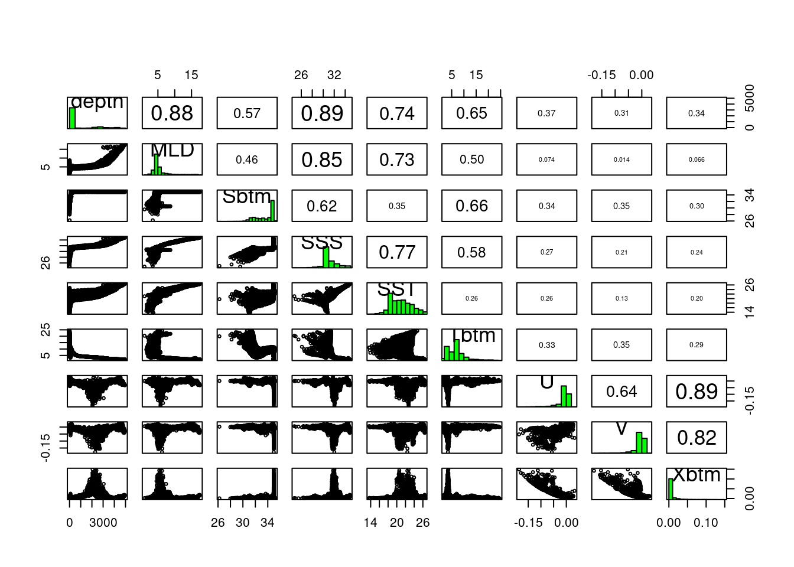
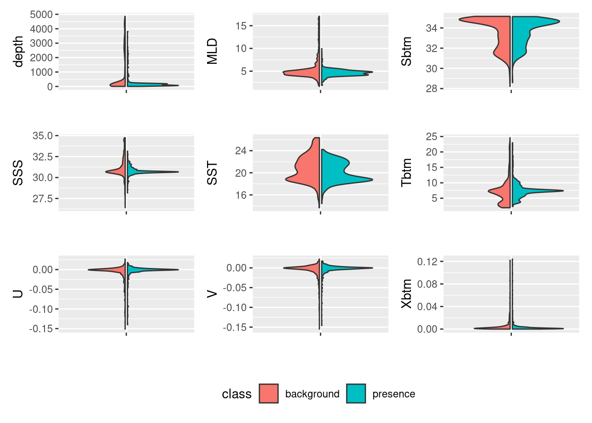

source("setup.R")Covariates
- “In the end that was the choice you made, and it doesn’t matter how hard it was to make it. It matters that you did.”
- Cassandra Clare
Now we turn our attention to what we know and guess about the environments. We are using the Brickman data to make habitat suitability maps for select species under two climate scenarios (RCP45 and RCP85) at two different times (2055 and 2075) in the future. Each variable we might use is called covariate or predictor. Our covariates are nicely packaged up and tidy, but the reality is that it often requires a good deal of data wrangling if the data are messy.
Our step here is to make sure that two or more covariates are not highly correlated if they are, then we would likely want to drop all but one.
1 Setup
As always, we start by running our setup function. Start RStudio/R, and reload your project with the menu File > Recent Projects.
2 A broad approach - looking for correlation across the domain
We can look at the entire domain, the complete spatial extent of our arrays of data, to look for correlated variables. For example, we might wonder if sea surface temperature(SST) and sea floor temperature (Tbtm) vary together, when one goes up the other goes up. That sort of thing. We have ways of getting at those correlations.
2.1 Reading in the covariates
We’ll read in the Brickman database, then filter two different subsets to read: “STATIC” covariate bathymetry that apply across all scenarios and times and monthly covariates for the “PRESENT” period. Note that depth is automatically included - that’s an option - see ?read_brickman for more information.
db = brickman_database()
present = read_brickman(filter(db, scenario == "PRESENT", interval == "mon"))We have used August before as our example, let’s continue with August.
aug = present |>
dplyr::slice("month", "Aug")2.2 Make a pairs plot
A pairs plot is a plot often used in exploratory data analysis. It makes a grid of mini-plots of a set of variables, and reveals the relationships among the variables pair-by-pair. It’s easy to make.
pairs(aug)
In the lower left portion of the plot we see paired scatter plots, at upper right we see the correlation values of the pairs, and long the diagonal we see a histogram of each variable. Some pairs are highly correlated, say over 0.7, and to include both in the modeling might not provide us with greater predictive power. It may feel counterintuitive to remove any variables - more data means more information, right? And more information means more informed models. Consider two measurements, human arm length and inseam. We might use these to predict if a person is tall, but since they are probably strongly collinear/correlated do we really need both?
2.3 Identify the most independent variables (and the most collinear)
We have a function that can help use select which variables to remove. filter_collinear() returns a listing of variables it suggests we keep. It attaches to the return value an attribute (like a post-it note stuck on a box) that lists the complementary variables that it suggests we drop. We are choosing a particular method, but you can learn more about using R’s help for ?filter_collinear.
keep = filter_collinear(aug, method = "vif_step")
keep[1] "MLD" "Sbtm" "SSS" "SST" "Tbtm" "U" "V"
attr(,"to_remove")
[1] "depth" "Xbtm" Of course, we can decide to ignore this advice, and pick which ever ones we want including keeping them all. In fact, marine ecologists are loathe to drop depth; in coastal science in particular depth plays a significant role in ecology and biology. So, despite the high collinearity, we are going to force the use of depth.
keep = c("depth", keep)Whatever selection of variables we decide to model with, we will save this listing to a file. That way we can refer to it programmatically, but that comes later.
2.4 A closer look at the model input data
Before we do commit to a selection of variables, let’s turn our attention back to our presence-background points, and look at just those chosen values rather than at values drawn form across the entire domain. Let’s open the file that contains the “greedy” model input for August during the PRESENT climate scenario.
model_input = read_model_input(scientificname = "Mola mola",
mon = "Aug")
model_inputSimple feature collection with 2046 features and 2 fields
Geometry type: POINT
Dimension: XY
Bounding box: xmin: -74.89169 ymin: 38.8679 xmax: -65.02004 ymax: 45.4608
Geodetic CRS: WGS 84
# A tibble: 2,046 × 3
month class geom
<chr> <chr> <POINT [°]>
1 Aug presence (-70.28574 42.13179)
2 Aug presence (-72.72 40.2)
3 Aug presence (-71.312 40.473)
4 Aug presence (-68.47897 43.32831)
5 Aug presence (-66.6635 40.91933)
6 Aug presence (-65.067 42.617)
7 Aug presence (-68.733 39.817)
8 Aug presence (-68.54 43.56)
9 Aug presence (-66.88484 43.10572)
10 Aug presence (-73.742 39.329)
# ℹ 2,036 more rowsNext we’ll extract data values from our August covariates.
variables = extract_brickman(aug, model_input, form = "wide")
variables# A tibble: 2,046 × 10
point depth MLD Sbtm SSS SST Tbtm U V Xbtm
<chr> <dbl> <dbl> <dbl> <dbl> <dbl> <dbl> <dbl> <dbl> <dbl>
1 p0001 47.4 4.44 31.9 30.6 19.7 6.03 -0.000329 -0.00207 0.000743
2 p0002 53.7 4.09 32.1 30.6 22.1 8.47 -0.00191 0.0000298 0.000678
3 p0003 77.2 4.30 33.4 30.7 21.7 8.95 -0.00324 -0.00149 0.00127
4 p0004 175. 5.05 34.4 30.7 18.5 7.49 -0.000634 -0.00101 0.000422
5 p0005 172. 3.96 34.8 31.1 20.0 8.47 -0.00494 -0.0102 0.00404
6 p0006 103. 4.01 33.6 30.7 18.5 6.19 -0.00652 -0.00678 0.00335
7 p0007 2294. 5.73 35.0 31.9 22.5 3.56 -0.120 -0.0900 0.0958
8 p0008 153. 4.90 34.4 30.7 18.3 7.44 -0.000406 -0.00224 0.000807
9 p0009 166. 5.42 34.4 30.6 18.8 7.54 0.00281 -0.0132 0.00481
10 p0010 39.9 4.87 32.0 31.1 23.2 11.3 -0.00302 0.00117 0.00115
# ℹ 2,036 more rowsWe are going to call a plotting function, plot_pres_vs_bg(), that wants some of the data from model_input and some of the data in variables. So, we have to do some data wrangling to combine those; we’ll add class to variables and then drop the point column.
variables = variables |>
mutate(class = model_input$class) |> # the $ extracts a column
select(-point) # the - means "deselect" or "drop"
variables# A tibble: 2,046 × 10
depth MLD Sbtm SSS SST Tbtm U V Xbtm class
<dbl> <dbl> <dbl> <dbl> <dbl> <dbl> <dbl> <dbl> <dbl> <chr>
1 47.4 4.44 31.9 30.6 19.7 6.03 -0.000329 -0.00207 0.000743 presence
2 53.7 4.09 32.1 30.6 22.1 8.47 -0.00191 0.0000298 0.000678 presence
3 77.2 4.30 33.4 30.7 21.7 8.95 -0.00324 -0.00149 0.00127 presence
4 175. 5.05 34.4 30.7 18.5 7.49 -0.000634 -0.00101 0.000422 presence
5 172. 3.96 34.8 31.1 20.0 8.47 -0.00494 -0.0102 0.00404 presence
6 103. 4.01 33.6 30.7 18.5 6.19 -0.00652 -0.00678 0.00335 presence
7 2294. 5.73 35.0 31.9 22.5 3.56 -0.120 -0.0900 0.0958 presence
8 153. 4.90 34.4 30.7 18.3 7.44 -0.000406 -0.00224 0.000807 presence
9 166. 5.42 34.4 30.6 18.8 7.54 0.00281 -0.0132 0.00481 presence
10 39.9 4.87 32.0 31.1 23.2 11.3 -0.00302 0.00117 0.00115 presence
# ℹ 2,036 more rowsFinally, can make a specialized plot comparing our variables for each class: presence and background.
plot_pres_vs_bg(variables, "class")
How does this inform our thinking about reducing the number of variables? For which variables do presence and background values mirror each other? Which have the least overlap? We know that the model works by finding optimal combinations of covariates for the species. If there is never a difference between the conditions for presences and background then how will it find the optimal niche conditions?
2.5 Saving a file to keep track of modeling choices
You may have noticed that we write a lot of things to files (aka, “writing to disk”). It’s a useful practice especially when working with a multi-step process. One particular file, a configuration file, is used frequently in data science to store information about the choices we make as we work through our project. Configuration files generally are simple text files that we can easily get the computer to read and write.
In R, a confguration is treated as a named list. Each element of a list is named, but beyond that there aren’t any particular rules about confugurations. You can learn more about configurations in this tutorial.
Let’s make a configuration list that holds 4 items: version identifier, species name and the names of the variables to model with.
cfg = list(
version = "Aug",
scientificname = "Mola mola",
mon = "Aug",
keep_vars = keep)We can access by name three ways using what is called “indexing” : using the [[ indexing brackets, using the $ indexing operator or using the getElement() function.
cfg[['scientificname']][1] "Mola mola"cfg[[2]][1] "Mola mola"cfg$scientificname[1] "Mola mola"getElement(cfg, "scientificname")[1] "Mola mola"getElement(cfg, 2)[1] "Mola mola"Now we’ll write this list to a file. First let’s set up a path where we might store these configurations, and for that matter, to store our modeling files. We’ll make a new directory, models/Aug and write the configuration there. We’ll use the famous “YAML” format to store the file. See the file functions/configuration.R for documentation on reading and writing.
ok = make_path(data_path("models")) # make a directory for models
write_configuration(cfg) Use the Files pane to navigate to your personal data directory. Open the Aug.yaml file - this is what you configuration looks like in YAML. Fortunately we don’t mess by hand with these much.
version: Aug
scientificname: Mola mola
mon: Aug
keep_vars:
- MLD
- Sbtm
- SSS
- SST
- Tbtm
- U
- V3 Recap
We loaded the covariates for the “PRESENT” climate scenario and looked at collinearity across the entire study domain. We invoked a function that suggests which variables to keep and which to drop based upon collinearity. We examined the covariates at just the presence and background locations. We then saved a configuration for later reuse.
4 Coding Assignment C03
Open and edit the file called functions/select_covariates.R. Within the file write the function(s) you need to select the “keeper” variables and a given month (Jan - Dec). Have the function return an appropriate configuration list. The function should start out approximately like this…
#' Given a species, month select variables for each month
#'
#' @param mon chr month abbreviation ("Jan" default)
#' @param scientificname chr the species studied (default "Mola mola")
#' @param path chr file path to the personal data directory
#' @return a configuration list
select_covariates = function(mon = "Jan",
scientificname = "Mola mola",
path = data_path()){
#
# you do stuff here to generate your own listing of variables to keep
#
ret = list(
version = month,
scientificname = scientificname,
mon = month,
keep_vars = <something you make above goes here>)
return(r)
}Use the iterations tutorial to apply your select_covariates() for each month using each approach. At each iteration write the configuration. When you are done, you should have 12 YAML files.
4.1 Challenge C03
Write a function that will read all of your configurations, and then generate a listing of the variables common to every model and a second listing of the ones that are not. Hint: see the help for intersect() and setdiff.